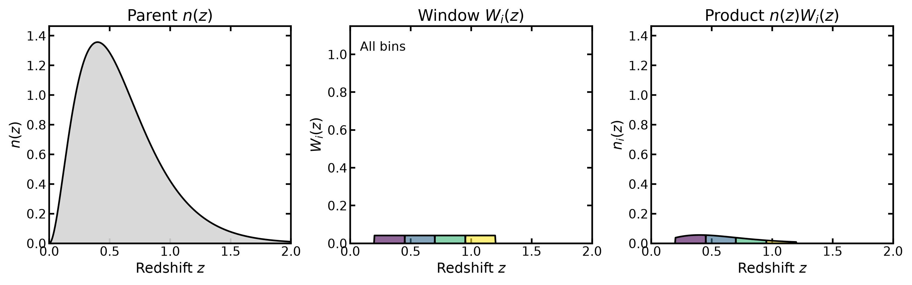
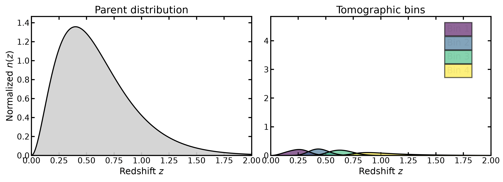
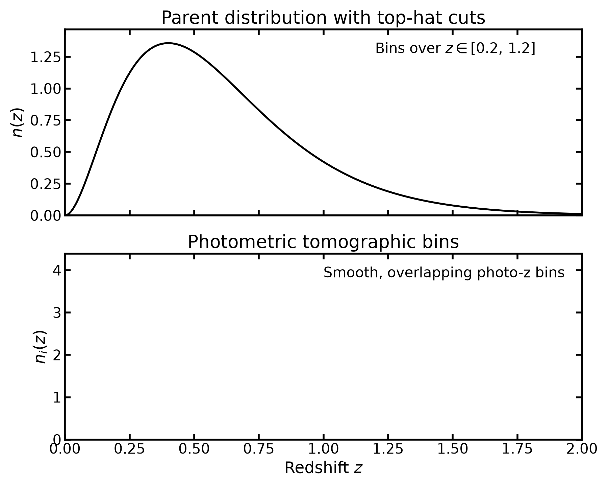
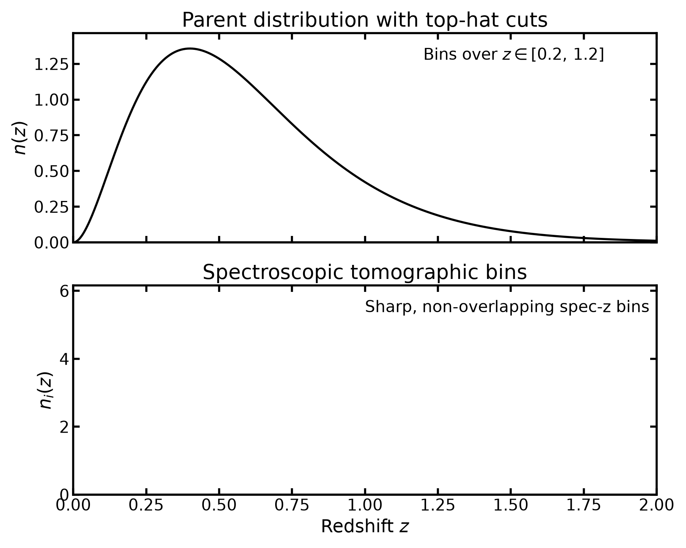
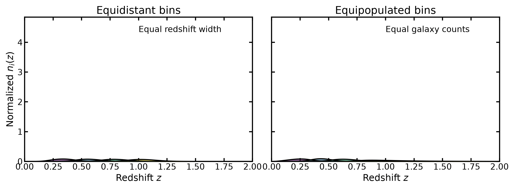

Tomography#
Tomography#
Tomography in cosmological analyses refers to the practice of subdividing a galaxy sample into populations and measuring correlations both within and between these populations.
Most commonly, galaxies are subdivided into redshift bins. By retaining partial redshift information, tomographic analyses recover information that would otherwise be lost in fully projected (two-dimensional) measurements.
More generally, galaxy samples may be subdivided according to other quantities, such as luminosity, magnitude, mass, or combinations of observational properties.
The resulting populations can each be described by their corresponding redshift distributions.
Binny provides utilities for constructing tomographic populations and inspecting their statistical properties.
Tomographic construction#
At the core of cosmological tomography is the redshift distribution of galaxies, \(n(z)\), which describes the abundance of objects as a function of redshift \(z\).
A tomographic construction defines a set of galaxy populations indexed by
Following the notation introduced in Conventions, each bin is described through a selection function \(S_i(z)\), such that the raw binned distribution becomes
Here
\(z\) denotes the true redshift,
\(n(z)\) is the parent redshift distribution, describing the distribution of galaxies as a function of redshift before selection,
\(S_i(z)\) is the selection function for bin \(i\), specifying how galaxies at redshift \(z\) contribute to that bin,
\(n_i^{\mathrm{raw}}(z)\) is the resulting raw redshift distribution for bin \(i\),
\(N_{\mathrm{bins}}\) is the total number of tomographic bins in the analysis.
The selection functions determine which galaxies contribute to each bin and how their contributions are weighted.
Deterministic selections#
In the simplest case, the selection function corresponds to a hard redshift cut,
where \(e_i\) and \(e_{i+1}\) denote the lower and upper redshift boundaries of bin \(i\).
This corresponds to a deterministic assignment in which a galaxy either belongs to the selected interval or does not.
More general selection functions are often used in practice, for example when bins overlap or when galaxies contribute probabilistically to multiple bins.


This illustrates the tomographic construction directly: a selection function selects part of the parent distribution \(n(z)\), yielding the raw binned distribution
Applying this construction for a set of selection functions
produces the full collection of tomographic bin curves.


A parent redshift distribution can therefore be used to construct a set of tomographic bin curves, each defined on the same redshift grid.
Probabilistic selections#
In many applications, the quantity used to assign galaxies to bins is not known exactly.
Instead, the assignment is described by a probability distribution.
For example, galaxies may be assigned to bins using observed redshift \(z_{\mathrm{obs}}\), while their underlying redshift distribution is defined in true redshift \(z\).
The relation between true and observed redshift is described by the conditional probability density
The effective selection function for bin \(i\) is then
The resulting selection function describes the probability that a galaxy with true redshift \(z\) is assigned to bin \(i\).
For probabilistic selections,
Unlike deterministic selections, probabilistic selections generally allow galaxies at the same true redshift to contribute to multiple tomographic bin distributions.
This does not necessarily imply that individual galaxies in an observed catalog are assigned to multiple bins.
Rather, galaxies with the same true redshift may have different observed redshifts and therefore different bin assignments.
Weighted selections#
Selection functions may also represent more general non-negative weights rather than assignment probabilities.
In this case,
without requiring that the selection function be bounded above by unity.
The same construction applies,
but the resulting distribution represents a weighted population rather than necessarily a count of selected galaxies.
The interpretation of its integral therefore depends on the definition of the supplied weights.
Binny distinguishes between probabilistic and weighted selections
through the selection_kind argument of
binny.tomography.core.build_tomography().
The supported selection kinds are probability and weight.
Selection coordinates#
The coordinate used to define the selection intervals does not necessarily have to be redshift.
Consider a general numerical coordinate \(x\), as described in Binning schemes.
The coordinate may represent, for example,
observed redshift,
luminosity,
magnitude,
stellar mass,
another physical or observational property.
If the conditional distribution of this quantity at a given true redshift is known,
then the effective selection function is
The resulting redshift distribution is
This construction illustrates how galaxy populations selected according to properties other than redshift can still be represented by their redshift distributions.
For example, luminosity-selected samples may have different redshift distributions even when no explicit redshift intervals are imposed.
More general selections may depend on several galaxy properties simultaneously.
The selection function then represents the effective contribution of galaxies at a given true redshift after accounting for the relevant selection criteria.
In Binny, such effective selections can be supplied through custom assignment functions.
The underlying physical or observational model that determines the selection must be supplied by the user.
The generic binning algorithms determine where boundaries are placed, while the assignment model determines how the selected coordinate relates to the underlying redshift distribution.
Normalization and bin overlap#
Tomographic bin distributions may be represented either in their raw form or as independently normalized distributions.
These two representations describe the same redshift dependence, but retain different information about the population.
Raw bin distributions#
The raw bin distribution is
Let the integral of the parent distribution be
and the integral of the raw bin distribution be
The raw bin distributions retain the relative normalization of the selected populations.
If the parent distribution represents a physical number density per unit redshift, the integral of each raw bin distribution retains the corresponding population normalization.
Normalized bin distributions#
In many analyses, each tomographic bin curve is normalized independently so that
For a raw bin distribution with a positive finite integral, the normalized distribution is
For probabilistic selections, the bin curves therefore represent conditional redshift distributions rather than fractions of the parent population.
For more general weighted selections, they represent the corresponding normalized weighted redshift distributions.
As a consequence, the amplitude of a normalized bin curve may exceed that of the parent distribution \(n(z)\), since each bin is normalized independently.
Independent bin normalization preserves the shape of each distribution but removes information about its relative population normalization.
In the core tomography builder, independent bin normalization is
enabled by default through normalize_bins=True.
Normalization of the parent distribution is controlled separately
through normalize_input, which defaults to True.
Population fractions#
For a parent distribution with positive integral, the relative population contribution of bin \(i\) is
Equivalently,
For deterministic or probabilistic galaxy assignments, this quantity represents the fraction of the parent population assigned to the bin.
For general weighted selections, it represents the corresponding relative weighted contribution.
If the selection functions describe a complete and mutually exclusive partition of the parent population,
then
and consequently
If the binning interval covers only part of the parent population, or if the selections include incompleteness, the summed population fraction may be smaller than unity.
More general overlapping assignments or weighted selections may produce summed contributions greater than unity.
Population conservation is therefore a property of the selection model rather than a universal requirement of tomographic construction.
The population fractions must be distinguished from the integrals of independently normalized bin distributions.
Bin overlap#
In realistic photometric surveys, bin curves typically overlap in true redshift because galaxies are assigned to bins using photometric redshift estimates rather than precise spectroscopic measurements.
Two bin distributions can overlap in true redshift even when their selection intervals in observed redshift are mutually exclusive.
For example, galaxies at a given true redshift may scatter into different observed-redshift bins.
The overlap of the resulting redshift distributions does not necessarily imply that the same galaxies have been counted more than once.
Similarly, overlapping redshift distributions do not necessarily violate population conservation.
For an exhaustive set of mutually exclusive observed-redshift bins, the corresponding assignment probabilities still satisfy
The degree of overlap depends on the redshift uncertainty model, the bin boundaries, and the underlying parent distribution.
Binny provides diagnostics for comparing the shapes, overlap, population fractions, and other statistical properties of tomographic distributions.
Spectroscopic vs photometric tomography#
Tomographic analyses are used in both spectroscopic and photometric surveys, though the practical implementation differs.
Photometric tomography#
In photometric surveys, redshifts are estimated from broadband photometry rather than directly from spectroscopic measurements.
Photometric redshift estimates are subject to measurement uncertainties, systematic offsets, and potentially catastrophic outliers.
The resulting bins are typically broader in true redshift and may overlap even when their nominal observed-redshift intervals are mutually exclusive.
The tomographic selection is obtained by integrating the photo-z error model over the observed-redshift interval of each bin.


Different photo-z uncertainty models can therefore produce different tomographic redshift distributions even when the nominal bin boundaries and parent distribution remain unchanged.
See Photometric-redshift uncertainties for a detailed description of photometric redshift uncertainty modelling.
Spectroscopic tomography#
In spectroscopic surveys, redshifts are generally measured with high precision.
Tomographic bins can therefore often be defined with minimal overlap in true redshift, and the corresponding selection functions are frequently approximated by sharply bounded windows.
However, spectroscopic samples may also be affected by measurement uncertainties, incompleteness, and incorrect redshift assignments.
These effects can modify the resulting redshift distributions and introduce leakage between tomographic bins.


Ideal deterministic redshift selections represent a limiting case of spectroscopic tomography in which redshift measurement errors are neglected.
See Spectroscopic-redshift uncertainties for a detailed description of spectroscopic redshift uncertainty modelling.
Predefined tomography#
Tomographic redshift distributions do not necessarily have to be constructed from a parent distribution and an assignment model.
They may instead be supplied directly from an external source, such as
observational measurements,
simulations or mock catalogs,
survey data products,
an external calibration procedure,
another analysis pipeline.
In this case, the tomographic distributions
are already defined.
The bin curves can be validated, optionally normalized, and represented together on a shared redshift grid without applying another binning prescription or assignment model.
The interpretation of predefined bin distributions depends on their original construction and normalization.
In particular, independently normalized predefined distributions do not generally contain sufficient information to reconstruct the relative populations of the original galaxy samples.
Population fractions or absolute population normalizations may therefore need to be supplied separately.
Practical examples are provided in Predefined bins.
Binning schemes#
When tomographic populations are constructed using coordinate intervals, a rule is required for defining their boundaries.
A binning prescription determines where these boundaries are placed, while the assignment model determines how galaxies contribute to the resulting populations.
Several binning strategies are commonly used.
Equidistant binning divides a coordinate interval into bins of equal width.
Equipopulated binning instead places boundaries such that each interval contains approximately the same integrated population according to the distribution used to construct the boundaries.


Equal-number binning may be useful when constructing populations with comparable galaxy counts.
However, comparable galaxy counts do not necessarily imply comparable statistical weight or cosmological constraining power.
More flexible prescriptions can be constructed by incorporating population densities, additional weighting functions, or transformed coordinates such as comoving radial distance.
Mixed binning schemes can also combine different prescriptions across adjacent coordinate intervals.
Such hybrid approaches allow the binning scheme to adapt to features of the underlying distribution while preserving control over the placement of bin boundaries.
A detailed mathematical description of the available prescriptions is provided in Binning schemes.
Tomography in Binny#
Binny separates the construction of tomographic populations into several components.
The parent redshift distribution describes the underlying galaxy population.
The binning prescription determines the nominal boundaries along the selected coordinate.
The assignment model determines how galaxies contribute to the resulting bins.
The normalization convention determines how the resulting distributions are represented.
The analysis utilities characterize and compare the resulting populations.
Alternatively, predefined tomographic distributions can be supplied directly without constructing them through a binning prescription and an assignment model.
The resulting populations are represented by a
binny.tomography.Tomography object containing the
redshift grid, parent distribution, bin distributions, and
associated information.
The main public functions for constructing tomographies are
The resulting bins are represented as redshift distributions, allowing them to be analyzed, visualized, and compared consistently across different tomographic configurations.
Practical usage examples are provided throughout the documentation:
Examples of parent redshift models and analytic \(n(z)\) functions are shown in Parent n(z) models.
Methods for calibrating redshift distributions from simulations or mock catalogs are demonstrated in Parent n(z) from mocks.
Detailed examples of binning prescriptions are provided in Binning schemes.
Detailed examples of photometric tomography, including overlapping bins constructed using photometric redshift uncertainty models, are provided in Photometric bins.
Examples of spectroscopic tomography are shown in Spectroscopic bins.
Examples of predefined tomography are provided in Predefined bins.
Additional diagnostics for inspecting bin shapes, overlaps, and statistical properties are illustrated in Bin diagnostics and Bin summaries.
Examples of bin combination generation and selection are provided in Bin-pair selections.
Survey-specific tomographic configurations used in forecasting studies can also be constructed using the utilities described in Survey presets.
For the scientific applications of tomography, see Applications of tomography.